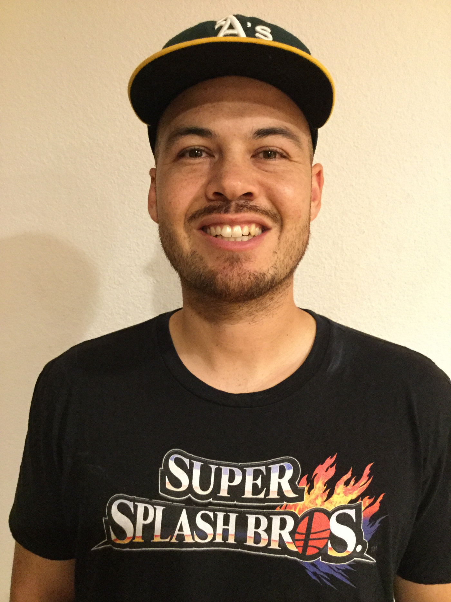

OUR PHILOSOPHY
1. Fun and challenging, to maximize enjoyment of basketball
2. Structured curriculum, to improve player skills over time
3. Safety and respect, to foster growth and diversity
OUR PROMISE
We pride ourselves on your child’s growth and experience. Hence, we promise this will be the funnest, most productive basketball training he or she will receive – ever.
OUR TEAM
 Coach Mike has played basketball for over 23 years and has coached for over 15 years. He has instructed basketball in the United States and in China, and received his education in engineering from UC Davis.
Coach Mike has played basketball for over 23 years and has coached for over 15 years. He has instructed basketball in the United States and in China, and received his education in engineering from UC Davis.
 Coach Dan has played basketball for over 20 years and has coached for over 12 years. He was the boys and girls coach at Thornton Junior High School for 5 years, and received his education in business from UC Berkeley.
Coach Dan has played basketball for over 20 years and has coached for over 12 years. He was the boys and girls coach at Thornton Junior High School for 5 years, and received his education in business from UC Berkeley.
Coach Jason has played basketball for over 20 years and has coached youth for over 5 years. He was a member of the junior national basketball team for China from 2005-2007 and also played for the Ohlone College (Fremont, CA) men's basketball team from 2010-2013.
 Coach Tim has played basketball for over 20 years and has coached youth for over 7 years. He played high school basketball at American High School (Fremont, CA) and played professionally for the Sioux City Hornets of the American Basketball Association. Since his playing days, he has coached competitive youth basketball teams for Uptempo Hoops AAU and Saint Annes CYO.
Coach Tim has played basketball for over 20 years and has coached youth for over 7 years. He played high school basketball at American High School (Fremont, CA) and played professionally for the Sioux City Hornets of the American Basketball Association. Since his playing days, he has coached competitive youth basketball teams for Uptempo Hoops AAU and Saint Annes CYO.
 Coach Justin attended John F. Kennedy High School (Fremont, CA) where he was a multi-sport athlete. He was a 3-year starter for the boys’ varsity basketball team as well as starting quarterback for the boys’ varsity football team. He has 5+ years coaching youth basketball at his church where he was head of the kids’ recreational program.
Coach Justin attended John F. Kennedy High School (Fremont, CA) where he was a multi-sport athlete. He was a 3-year starter for the boys’ varsity basketball team as well as starting quarterback for the boys’ varsity football team. He has 5+ years coaching youth basketball at his church where he was head of the kids’ recreational program.
Coach Christina has played basketball for 12 years. She started as an 8 year-old playing for the Saint Anne’s CYO girls’ basketball team for 6 years, then played AAU, high school varsity basketball, and ended her organized basketball career as a Renegade on the Ohlone College (Fremont, CA) Women’s Basketball Team. Coach Christina was a fitness instructor and personal trainer for 5 years and received her degree in Kinesiology from San Jose State University.

Coach David has played basketball for over 20 years. He was the head coach for both the boys’ and girls’ basketball teams at Holy Family School in San Diego for 4 years. He has been teaching youth basketball since 2005. He played basketball at Washington High School in Fremont, California.